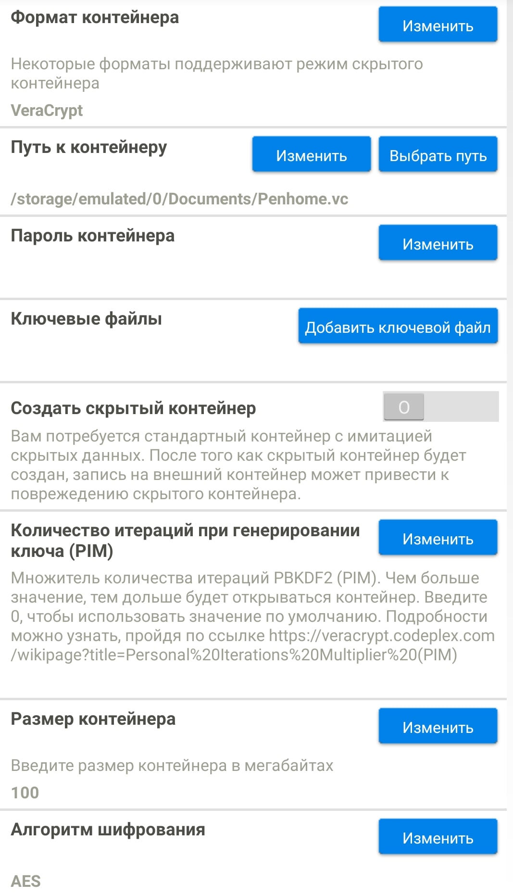
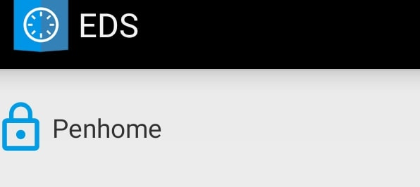
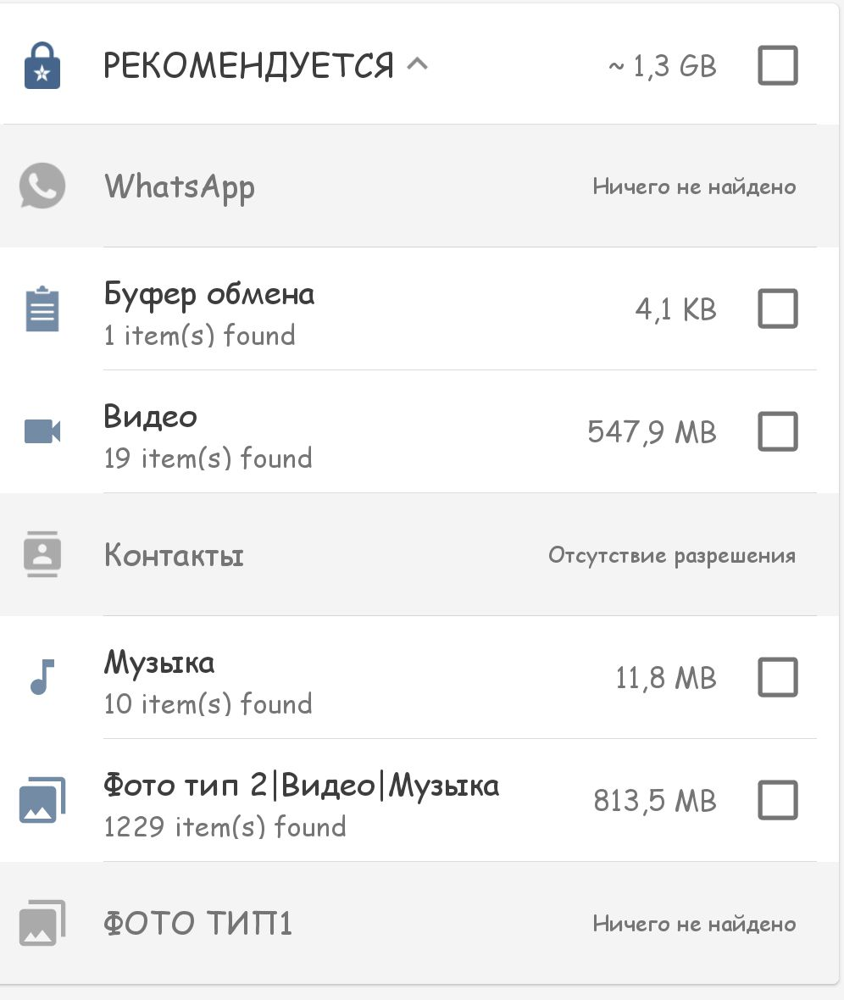
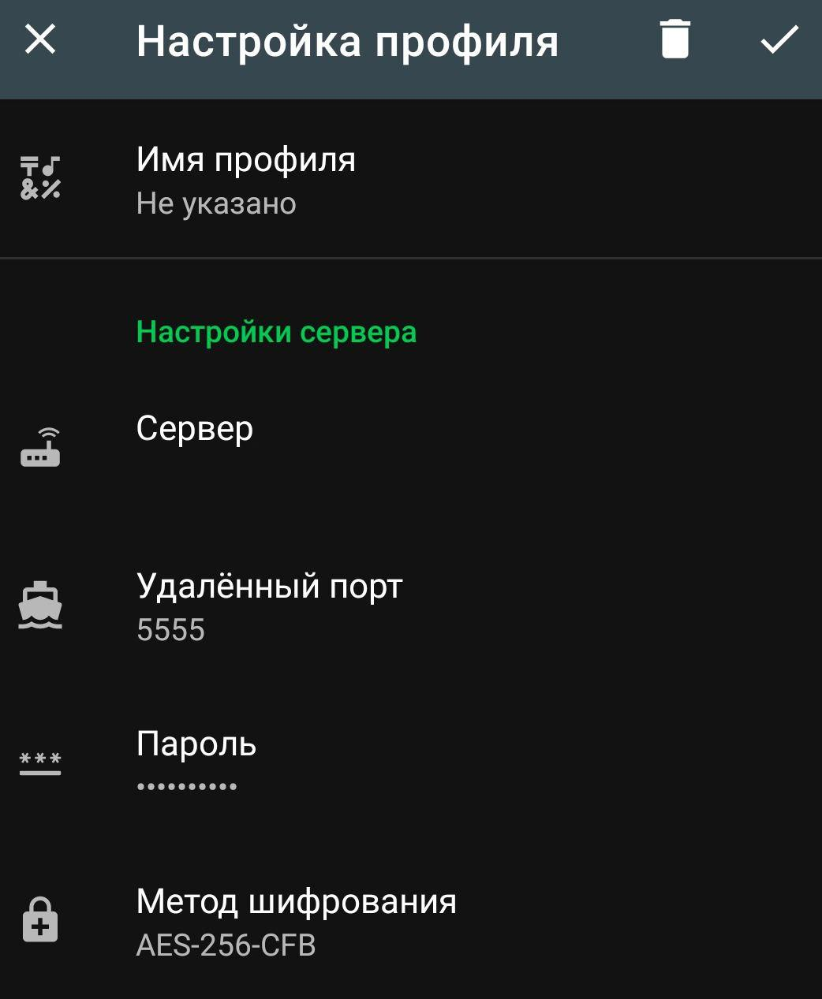

Анонимность
Трафика и действий
VPN&&TOR
Для начала стоит сказать, что существует много аспектов как вас вычисляют по браузеру, здесь я расскажу про способы скрытия ip, обхода блокировок сайтов и некоторе нюансы!
По оценкам кибер-специалистов примерно каждый 4 узел тор - вредоносный, он может перехватывать пароль по не защищенному трафику, а также способствует деанону вашего настоящего ip, поэтому перед tor всегда стоит использовать VPN или другие не прозрачные прокси (Shadowsocs), но не стоит брать любой из Play Market, ведь они собирают о вас больше информации чем вы можете себе представить от ip до IMEI!Недавно слитая база об этом говорит(июль 2020).. Поэтому большиство бесплатных впн можно откинуть!
Я остановил свой выбор на WindScribe - из плюсов это множество серверов, не собирает данные и не выдает по 1 требованию, и наличие функции открытия портов на ip что отлично подходит под RAT!Это не в коем случае не реклама, но я смог за 109р купить аккаунт до 2026 года с пожизненной гарантией!Этот сервис есть как под Windows и Android, так и под Linux!Впрочем вы можете использовать любой другой или создать свой по статье ниже!
Tor Browser - данное приложение позволит вам посещать onion ресурсы без всяких проблем и наворотов, тем более что это оффициальное приложение и оно само собой прогоняет весб трафик через луковичную сеть!Конечно эе есть несколько режимов приватности, я рекомендую самый максимальный!Но конечно же под обычный серфинг он не подойдет ведь все м ылюбим скорость и удобство, а скорость здесь будет сильно хромать!
Сохранность данных
Скрытие и удаление
Конечно же в современном мире сейчас без смартфона никуда, но к сожелению пока он не обладает должной защитой и не блещет своей анонимностью.Конечно мы не говорим про обычные файлы, а например про те которые могут вас подставить, но они вам могут понадобится под рукой!Именно для этого был изобретен EDS, приложение которое способное открывать и создавать криптоконтейнеры!
Для этого нажимаем на боковое меню Управление контейнерами->"+"->Создать новый контейнер

Здесь можно увидеть много настроек, давайте пройдемся по основным! Типы шифрования:
- TrueCrypt (рек.)
- LUKS VeraCrypt (рек.)
- Cybersafe EncFs
Здесь уже каждый на свой вкус, кто чему больше доверяет! Путь к контейнеру - можно указать любой путь(можно будет перемещать) и любое расширение (хоть mp4) Пароль контейнера - ну тут думаю очевидно с помощью него вы сможете расшифровать свои даннык обратно Ключевые файлы - очень удобная штука, например даже зная пароль или брутя его на другом устройстве, но не имея файла по указанному пути, он не расшифруется! Размер контейнера - указывайте в мб, увеличить в будущем не выйдет!
Используем контейнер
После создания в боковом меню и в центре управления отобразится наш контейнер!
Если нажать на него нас запросят пароль!

Ни для кого не секрет что при удаление какого либо файла, с помощью специальных программ и утилит их можно без всякого труда восстановить, это можно проверить с помощью обычных утилит из play market. Для того чтобы файл невозможно было восстановить придумали утилиту Ishreder, она использует метод многократной перезаписи для достижения невозможности удалить файл, в наеш время достаточно 4-7 проходов когда программа может удалять проходя 50 раз!Также спокойно обнаруживает остатки изображений и кэша!Есть возможность зачистки уже свободного пространства!
Shadowsocks
Поднимаем свои прокси на VDS
Shadowsocks - это пара из программы для сервера и клиента, работающих по следующему принципу: клиент изображает из себя сервер SOCKS5 прокси, получает входящие соединения, шифрует их, транслирует на сервер и там выпускает в интернет. То есть, принцип работы похож на SSH туннель, но имеет массу достоинств!К примеру установки и настройки менее чем за 15 минут!Пропускная способнасть намного выше чем у ssh тунеля и поддерживает тысячи клиентов одноверменно!
Характеристики у вашей VDS/Vps могут быть почти любыми, к примеру 512 озу вполне хватит на себя и парочки друзей!Главное это пропускная способность сервера и наличие ограничения по трафику!За 300р я нашел один с анлим трафиком 1гб озу и этой машини вполне хватает для любых нужд!
Установка
sudo apt install shadowsocks-libev
Далее редактируем файл по пути /etc/shadowsocks-libev/config.json
И сохраняем файл!
Перезапускаем сервер командой:
sudo systemctl restart shadowsocks-libev! После чего скачиваем приложение Shadowsocks из плеймаркета и подключаемся!